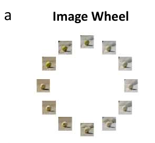
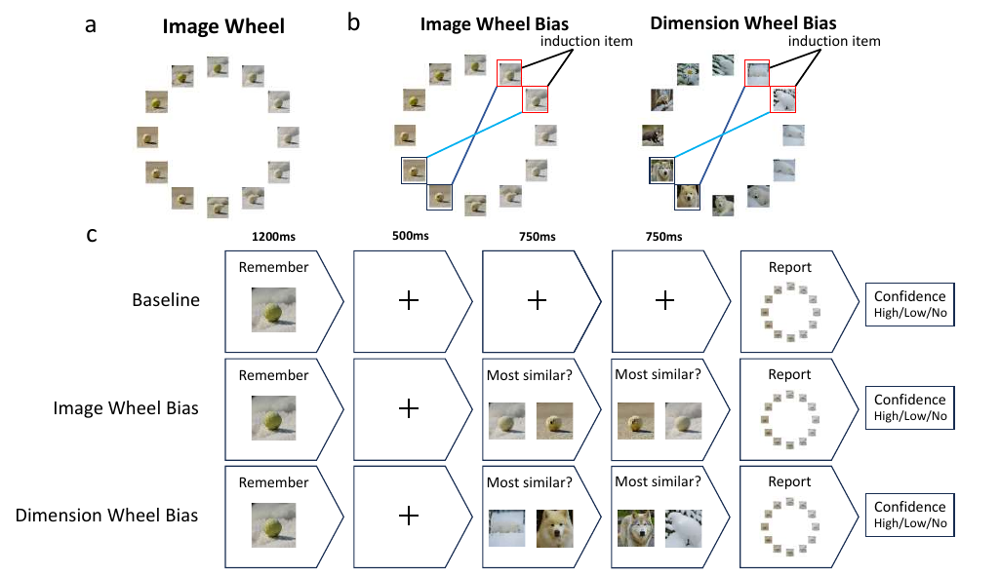

Memory & perception
How does comparing what we remember with what we see change visual working memory?
Cognitive science · Generative AI
Studying human cognition with AI as a research tool.
I am an undergraduate in Intelligent Medical Engineering at Southern University of Science and Technology (SUSTech). In Quanying Liu’s NCC Lab, I work on visual working memory, controllable visual stimuli and human evaluation of emotion descriptions.

Research interests
How does comparing what we remember with what we see change visual working memory?
How can we vary object features in a controlled way to ask more precise cognitive questions?
Where do model-generated descriptions agree with human judgments, and where do they differ?
Selected publication
We used generated object images to examine how perceptual comparisons distort visual working memory. The study compares image-based and dimension-based similarity, finding that similarity in object dimensions can also bias memory.

The paper tests memory under a baseline condition and two perceptual comparison conditions. Image wheels vary image similarity; dimension wheels vary object-dimension similarity. Both types of comparison can induce memory distortion, with visual dimensions more susceptible than semantic dimensions in this study.
Research notes
Interactive literature map · 2026
An interactive reading note that connects the dataset’s measurement items and fMRI to the data selections, analyses, and findings of subsequent studies.
Explore the interactive map ↗Literature interpretation, with primary sources and explicit limits; not a new empirical study.
Read all 50 items and their scale endpoints.
Highlight the data each study actually used.
Separate the findings from what they cannot establish.
Research experience
Research in Quanying Liu’s NCC Lab, SUSTech
Research in Quanying Liu’s NCC Lab, SUSTech
Education
B.Eng. student, Intelligent Medical Engineering · 2023–2027 (expected)
A compact overview of the topics above. Select a topic to read more.
Get in touch
For questions about the paper or potential research collaborations, email is the best way to reach me.